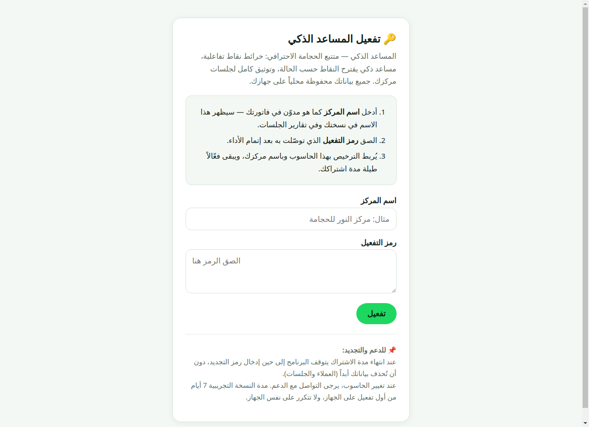
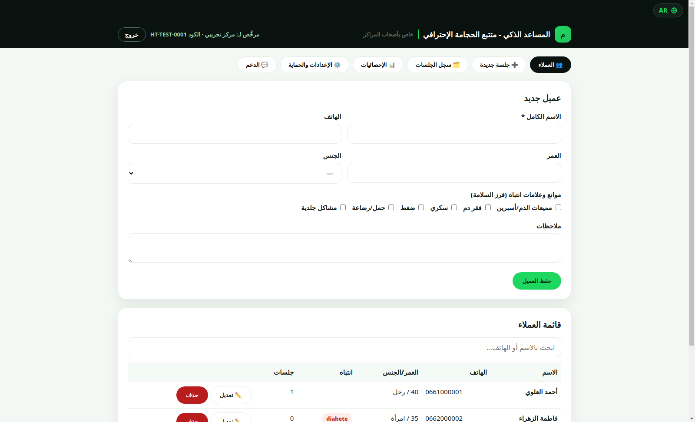
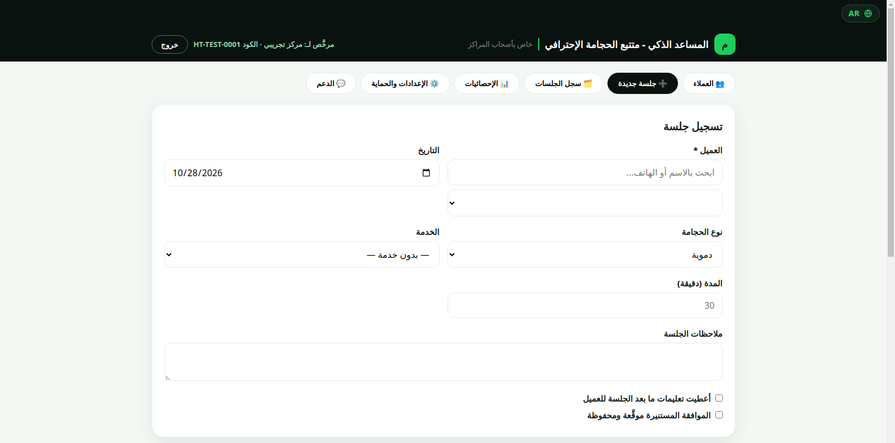
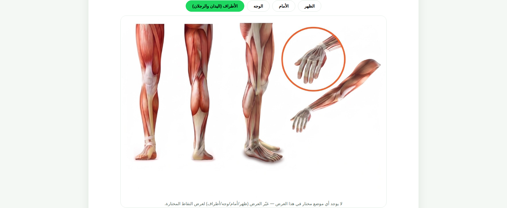
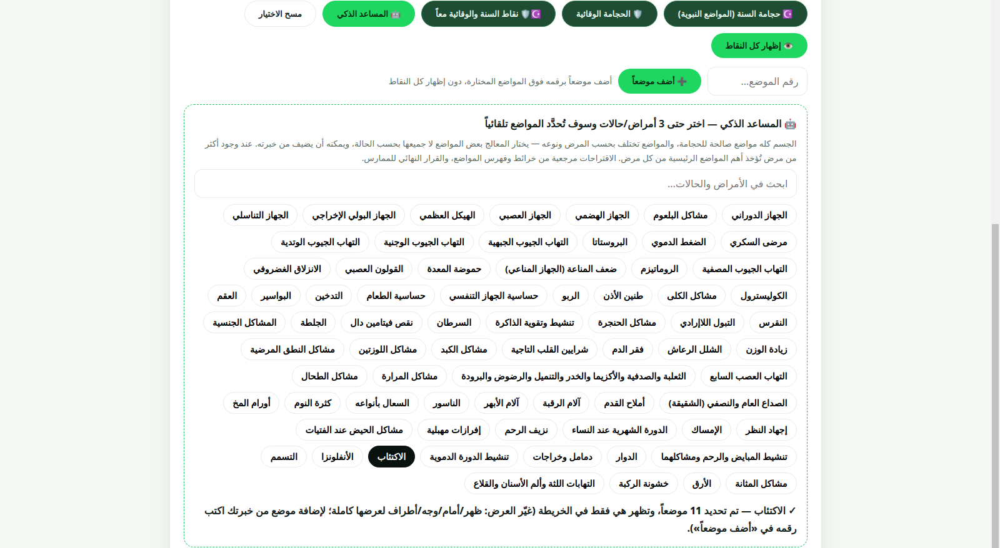
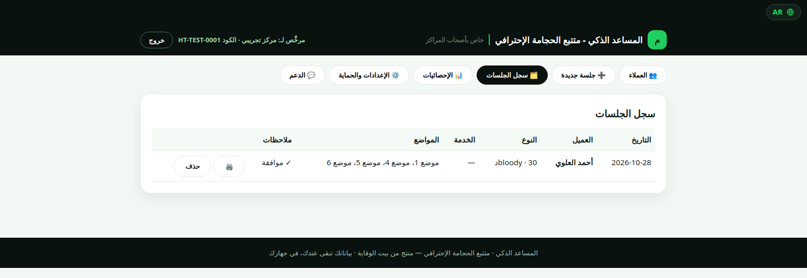
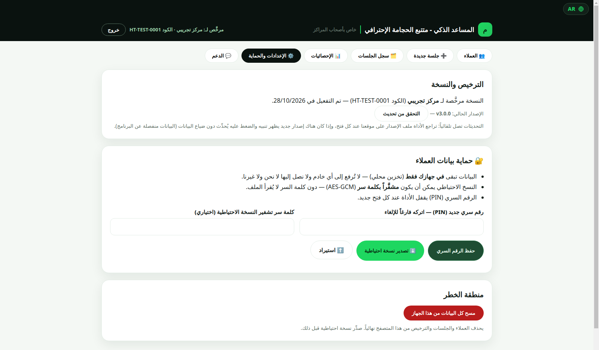

المساعد الذكي
أداة احترافية لمراكز الحجامة: خرائط نقاط تفاعلية، مساعد ذكي يقترح النقاط حسب الحالة، وتوثيق كامل للجلسات — وكل شيء محلي على جهازك، مع تحديثات تلقائية من داخل التطبيق.

النسخة 3.0.1 لنظام Windows، بحجم يقارب 115 ميجابايت. بعد التثبيت ستجد اختصاراً على سطح المكتب وفي قائمة ابدأ، ويُمنح الترخيص الرسمي بالاسم والكود بعد الطلب والأداء.
ماذا يفعل المساعد الذكي؟
ست ميزات عملية، صُممت من داخل مركز حقيقي.
🗺️ خريطة نقاط تفاعلية
154 نقطة على خرائط الظهر والأمام والوجه والأطراف — اختر باللمس مباشرة على الخريطة.
🤖 المساعد الذكي
اختر حتى 3 حالات دفعة واحدة، وهو يقترح النقاط المناسبة — 72 حالة جاهزة، وأضف أي موضع يدوياً برقمه.
☪️ نقاط السنة والوقائية
مجموعات جاهزة بضغطة واحدة: نقاط السنة، أو الوقائية، أو معاً.
🗂️ توثيق كامل
ملفات العملاء مع البحث السريع، سجل الجلسات، ورقة جلسة للطباعة، والموافقة المستنيرة قبل كل جلسة.
🔒 حماية قوية
قفل PIN، نسخ احتياطية مشفّرة (AES-GCM)، وبيانات محلية 100%.
🔄 تحديثات تلقائية
عند صدور نسخة جديدة، ينبّهك التطبيق ويحدّث نفسه بضغطة واحدة — والترخيص والبيانات تنتقل معك تلقائياً.
كيف يعمل؟
حمّل النسخة v3.0.1 — من زر التحميل المباشر في هذه الصفحة (Windows، مثبّت رسمي يُثبَّت على حاسوبك).
فعّل بالاسم والكود — اطلب الترخيص عبر واتساب، ادفع بتحويل بنكي، وتوصّل بالكود الخاص باسم مركزك.
سجّل العملاء والجلسات — من الخريطة التفاعلية، من نقاط السنة والوقائية، أو من المساعد الذكي.
وثّق وحدّث — كل جلسة محفوظة في السجل، والتحديثات تصلك داخل التطبيق بضغطة واحدة.
المعايير التي نعمل بها
قبل أن تكون أداة، هي التزام مهني.
🛡️ السلامة أولاً
فرز الموانع والموافقة المستنيرة قبل كل جلسة، بمواءمة مع معايير WHO في السلامة والتعقيم.
🔒 خصوصية مطلقة
بياناتك لا تغادر جهازك أبداً — تخزين محلي فقط، دون خوادم أو تتبع.
📖 محتوى مهني منضبط
خرائط ونقاط مهنية، بعيدة عن الخرافة والادعاءات غير المثبتة.
🗂️ توثيق وشفافية
كل جلسة موثقة: العميل، النوع، النقاط، الملاحظات، والموافقة — مرجع مهني كامل.
جولة داخل التطبيق — صفحة بصفحة
صور حقيقية من داخل التطبيق، صفحة بصفحة.










برامج أخرى للمراكز — قريباً ⏳
نُعدّ أدوات جديدة لأصحاب المراكز، وسنعلن عنها هنا عند جاهزيتها.
أسئلة شائعة
كيف أفعّل التطبيق؟
حمّل النسخة من هذه الصفحة، اطلب الترخيص عبر واتساب، ادفع بتحويل بنكي، وتوصّل بالكود الخاص باسم مركزك — أدخله في شاشة التفعيل.
هل تعمل الأداة دون أنترنت؟
نعم، الاستعمال اليومي كامل محلي على جهازك: العملاء، الجلسات، والنسخ الاحتياطية. الأنترنت مطلوب فقط للتحميل الأول وللتحقق من التحديثات.
هل يمكنني استعمالها على أكثر من جهاز؟
الترخيص الواحد لجهاز واحد بالاسم.
كيف تصلني التحديثات؟
يتحقق التطبيق تلقائياً: عند صدور نسخة جديدة يظهر تنبيه، وضغطة واحدة تحمّلها وتثبّتها — والترخيص والبيانات تنتقل معك تلقائياً.
كيف أدفع؟
بتحويل بنكي — اطلب عبر واتساب (من CIH يكون التفعيل فورياً، ومن بنك آخر بعد وصول التحويل).
ما متطلبات التشغيل؟
نسخة Windows (حاسوب). مثبّت رسمي: ثبّته على حاسوبك، وستجد اختصاراً على سطح المكتب وفي قائمة ابدأ، وإلغاء التثبيت من لوحة التحكم.